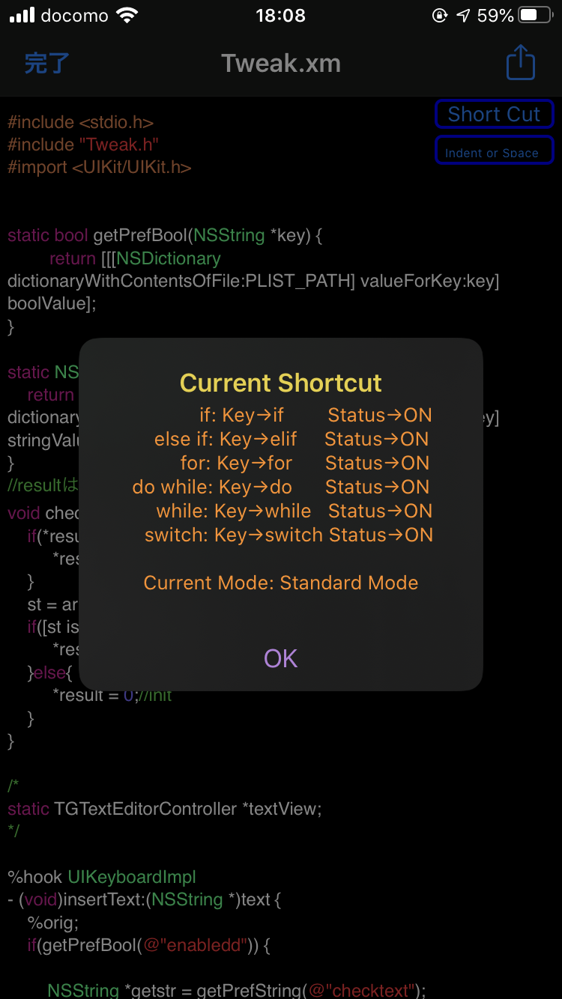
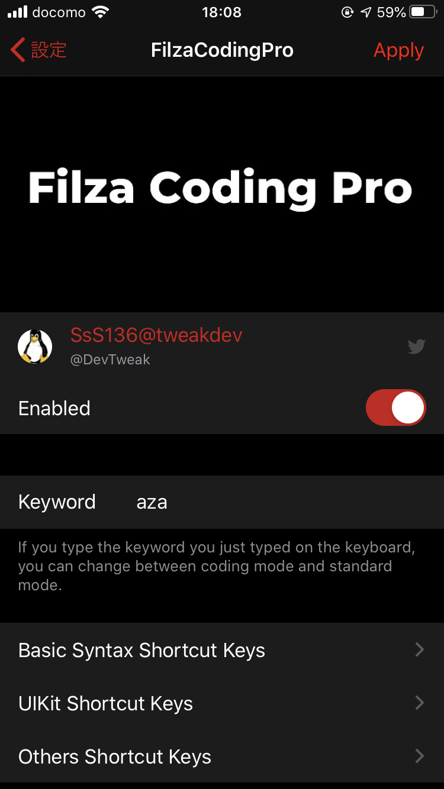
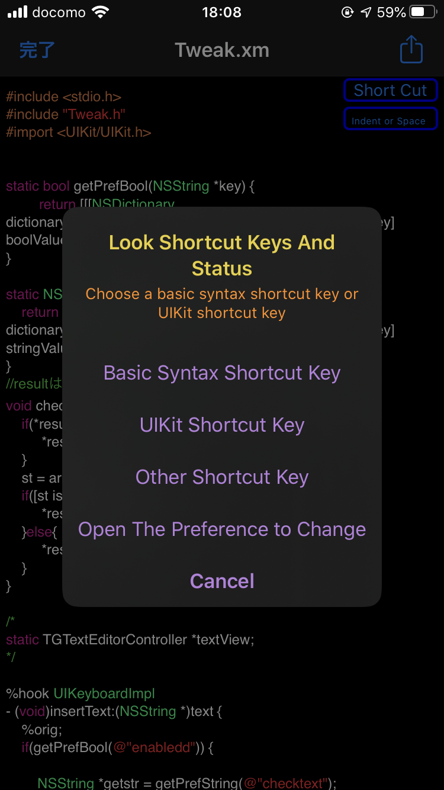

|
   |
•JAPANESE ↓↓↓ Filzaでspaceキーを押したらインデントが出来たり、特定のワードを入力したら、キーの入力をショートカット出来ます。 例えば、2回インデントした後に、2elifと入力すると、「else if」が出力されたり、3回インデントした後に3uibtnと入力すると、UIButtonの生成コードが出力されます。詳しくはYoutubeをご覧下さい。 •各ボタンの説明 ShortCut Buttonはショートカットキーの一覧を見れます indent or spaceはindentモードとspaceモードの切り替えです •ENGLISH ↓↓↓ You can indent by pressing the space key in Filza, or you can use the shortcut to enter the key when you enter a specific word. For example, if you enter 2elif after indenting twice, "else if" is output, and if you indent 3 times and then enter 3uibtn, the generated code of UIButton is output. For details, please see Youtube. •Explanation of each button ShortCut Button can see the list of shortcut keys, indent or space switches between indent mode and space mode |
| name | Filza Coding Pro |
|---|---|
| ios versions | ios11~13 |
| version | 1.0 |
| Last Updated | April 14, 2020 |